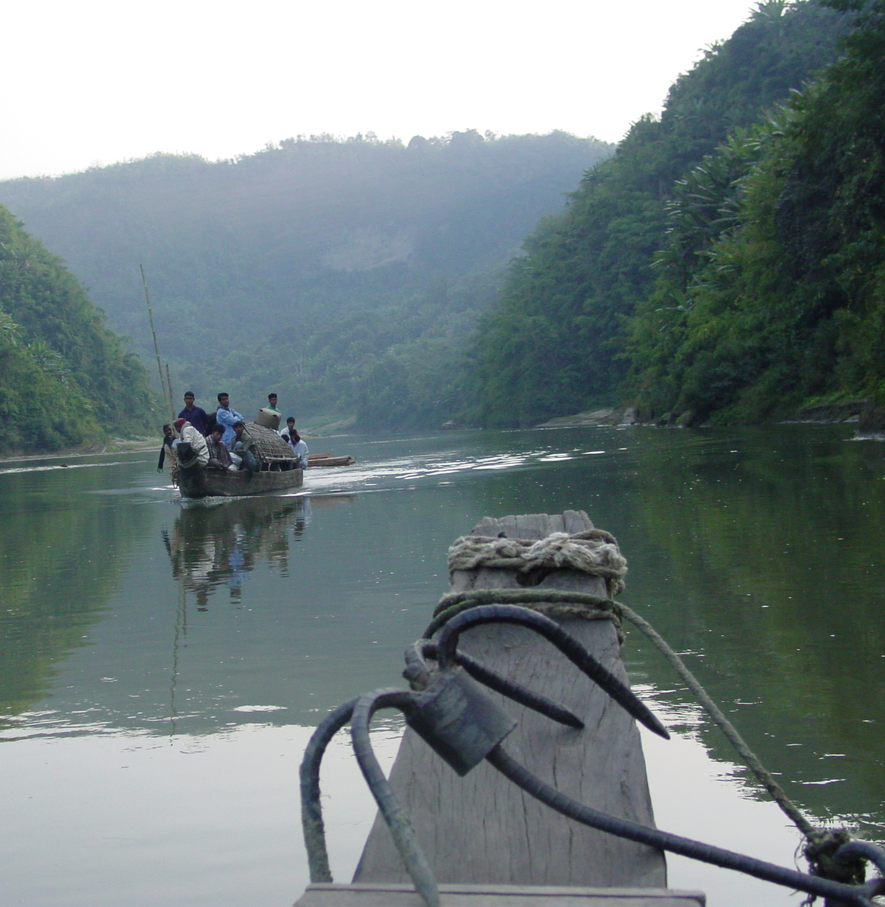
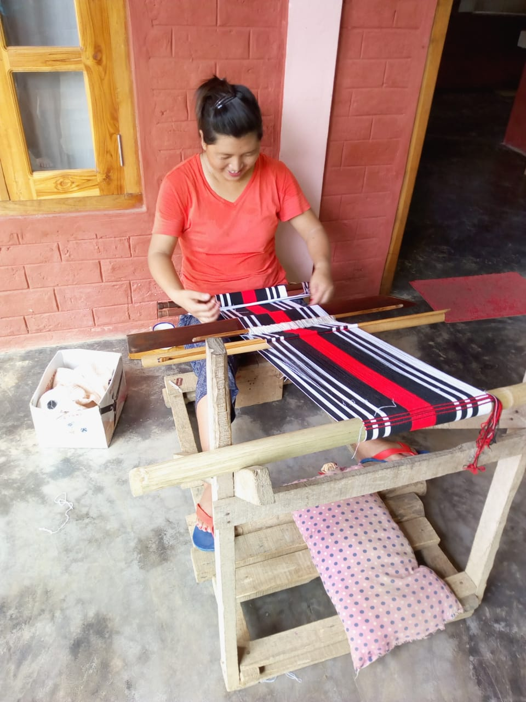

"As we have therefore opportunity, let us do good unto all men, especially unto them who are of the household of faith."
- Galatians 6:10
Doing Good
Jesus had compassion for the poor and he left us this challenge, "...whenever you wish you may do them good...”.
FARMs International is an opportunity for you to "do good" for your brothers and sisters in an exciting and practical way.
Biblical Approach
FARMs International combines Christian stewardship with interest free loans to help families
give and work their way out of poverty while preserving their dignity and avoiding dependency.
It Works
Our unique and refreshing approach to microcredit has helped thousands of families
and their churches in places of great need and persecution for over 56 years!
These special editions of our newsletter offer in-depth information on FARMS approach and methods.
See our Resources page for additional publications
FARMS is funded by donors like you
and we need your support
FARMS is funded by donors like you and we need your support
Thank you for your desire to help Christians in need through the ministry of FARMS International, Inc.!
FARMS International, Inc. is a registered 501(c)(3) non profit organization headquartered in Minnesota.
FARMS International, Inc. complies fully with federal and state charitable solicitation requirements and
is a Member of the Evangelical Council for Financial Accountability.
All donations in the United States are tax-deductible in part or in full. You will receive a tax deductible receipt for your donation.
Tell your friends about us, share our social media and blog posts, or
contact us to request a free DVD to show to others,
to request a presentation at your church, or to learn how to pray for FARMS
Contact Us
Send us snail mail at:
FARMS International, Inc.
P.O. Box 270
Knife River, MN 55609
FARMS is actively working in Cuba and has been there since 2012. Although the economic system there
makes it difficult for Cubans to provide for their families, the church is growing rapidly in Cuba.
Many Cubans would like to start a small business since they were legalized by governmental reforms
in 2010 but they do not have access to the funds required to do so. FARMS works with Cuban house
churches across Cuba to provide loans for these businesses. Our programs have funded hog farms,
carpenter shops, chicken farms, and more.
Find out more about our Cuba project in additional publications on our Resources page or
in this FARMS blog post.
Bangladesh

Bangladesh is a diverse country with approximately 164 million people that occupy a land area comparable to the
state of Wisconsin. We have four programs in this needy country. Our first began in 1996 with
Christians living in the Chittagong Hill Tracts. This area is known as the most diverse tribal area
in the world. Bordering Myanmar on the east, it is a narrow strip of hilly land filled with remote
villages connected by foot trails. We partner with an indigenous tribal church association to
provide income generation loans for this rapidly growing Christian population.
Our second program began in 1997 when only 1000 believers were part of a new people movement with
converts from the majority religion. FARMS mainly supported pedal rickshaw project, which through
additional indigenous funding, now numbers in the thousands. Our partnership in the beginning of
this movement has been credited with spurring the growth of thousands of house churches.
Our third program began in 1998, helping a community of Bengali converts from the Hindu minority.
These Christians are disadvantaged and extremely poor. Most of the project involve farming and
small animal raising.
A fourth program was begun in 2007 and is in the far southwestern part of the country just north of
the Ganga Delta. Although this part of the country in culturally Hindu, there has been a real
openness to the gospel. This region is nearly inaccessible, except by water. The main project in
this region consist of fish farming, poultry, and cattle raising.
Find out more about our Bangladesh project in additional publications on our Resources page.
Haiti
Haiti has the distinction of being the poorest country in the Western Hemisphere, its name has
become synonymous with poverty and sometimes hopelessness. FARMS mission in Haiti is to confront the notion of hopelessness through our loan programs.
We have been very pleased to see God move in hearts to produce genuine hope in believers, without
the perennial scourge of dependency.
FARMS International has two programs in Haiti originating in 1997, one centered in the
northern city of Cap Haitien and the other on the Central Plateau near Bohoc.
We partner with Family Life Outreach in Cap Haitien. Family Life Outreach is the development arm of
the indigenous Evangelical Church of Haiti, which consists of over 50 churches both
rural and urban. This group of churches is fully independent and self-supporting,
which is almost unique in Haiti. Here, FARMS helps families with agricultural
and small business loans.
Our other program, on the Central Plateau, reaches out to many local independent and
denominational churches. The plateau is extremely poor and our program is a real
blessing to Christian families. Access to credit is limited and other “microcredit”
groups are reported to charge exorbitant interest for loans. Our interest free loans are a breath
of fresh air.
Find out more about our Haiti project in additional publications on our Resources page or
in this FARMS blog post.
Moldova
Moldova, a former satellite of the Soviet Union is a small nation landlocked between the Ukraine and
Romania. When our program started in 2005 it was a first for FARMS in Eastern Europe. Moldova is known
as “the poorest country” in Europe. Although, formally known as the “breadbasket” of Eastern Europe,
Moldova was devastated economically when the Soviet Union broke apart. Its agricultural products were
no longer welcomed in Russia. Although Moldova is a country rich in agricultural
resources, it is still struggling as a nation. The average Moldovan family lives on $1200 dollars a
year. Imagine providing food, housing, and education for children at this income level in Europe.
The people of Moldova have a great work ethic and are proud of their history and our project
reflect this; a true entrepreneurial spirit prevails. project include beekeeping project,
mushroom growing, greenhouse vegetable farming and numerous animal and other agricultural endeavors.
It is our goal to see more and more families given an opportunity to use their skills to work,
prosper, and maintain their dignity. We have been greatly encouraged by the testimonies of
pastors who have seen increased tithing in their churches, which allows them to focus on
ministering and sharing the Gospel. Please pray for the Christians in Moldova. Also, pray
that we can enlarge the program to help more Christian families, especially those that are adopting
orphans into their families.
Find out more about our Moldova project in additional publications on our Resources page or
in this FARMS blog post.
Nagaland/India

Nagaland lies in the far northeast of India and the Naga people who live there consist of sixteen
colorful and courageous tribes. The Nagas have embraced Christianity in overwhelming numbers
with some estimates putting the percentage of believers at 80% of the population. Several revivals
have swept through Nagaland and nearly every village has a church.
FARMS began working with churches of the Ziliangron tribe in 2004. This tribe, because of its
remoteness, has had few opportunities for economic advancement. In fact, many of them have
relocated to better their livelihood. For years, security concerns have restricted travel of
foreigners to any outlying villages. On our last visit, we felt honored to be able to visit
three Ziliangron villages. In fact, we were the first foreigners ever to step foot in these
particular villages!
God is working through FARMS in Nagaland and we have been encouraged by the reports of how the
increased tithing that FARMS loans have created has enabled the Nagas to send missionaries
throughout the region. Our project there consist of agriculture,
fish farming, rubber tree plantations, silk production, animal husbandry, and hand woven material.
Find out more about our Nagaland project in additional publications on our Resources page.
The Philippines
The location of our program in the Philippines is in the Central Luzon region of the large province
of Pangasinan. This province is noted for its agriculture, especially rice and corn. Bounded on the
north by Lingayen Gulf it also has a large aquaculture and marine fisheries industry.
Although the Philippines has prospered in many ways, the rural areas still face many economic
hardships. This is true of many of the remote villages in this part of the Philippines.
We began our program in Pangasinan after being contacted by a predominantly Filipino church
in New Jersey. The pastor of that church asked if we could start a program in his birthplace to help
the many disadvantaged Christians. Their church graciously helped fund part of the initial
startup and have continued to support FARMS over the years. Our program began in 2003
and has project in agriculture and home industry. The tithing from project holders has helped the
churches a great deal.
Find out more about our Philippines project in additional publications on our Resources page or
in this FARMS blog post.
Thailand
In 1998, we began our first program in Thailand with churches along the northern border with Laos.
The churches are primarily made up of Christians from the Hmong, Aka and Mien tribal groups.
These tribal people are very disadvantaged and mostly live in remote villages. Historically,
tribal farmers used destructive slash and burn farming practices which have been
outlawed; forcing them to find new ways to support themselves. FARMS loans have gone a long way in
helping that by funding many agricultural ventures as well as some small businesses.
Coffee growing has turned out to be a profitable enterprise and our loans have helped farmers grow
and develop this industry in their villages. The tribal people of Thailand have
been receptive to the gospel and many churches have been planted along this border region. The FARMS
program has truly been a blessing to both these people and their churches.
Our second program in Thailand is serving the Lahu tribal churches along the northern border with
Myanmar. The Lahu people are a displaced people group with roots in Myanmar. In 2003 we partnered
with Thailand Lahu Christian Church (TLCC) in Chiang Mai. This indigenous church group partners
with the Evangelical Free Church in missions. The churches are in remote villages and most of our
project are in animal husbandry and cash crops like coffee. The Lahu people
are hard working and have a zeal for evangelism and missions.
Find out more about our Thailand project in additional publications on our Resources page or
in this FARMS blog post.